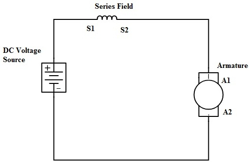

HOME/ABOUT
- Series DC motors are a group of self-excited DC motors in which the field coil is connected in series
to the armature winding and thus a higher current passes through it.
- A series DC motor mission is to turn the electrical energy into mechanical one based
on electromagnetic law.
- 1886 – The invention of the DC motor
- William Sturgeon invented the first DC motor that could provide enough power to drive machinery
but it wasn't until 1886 that the first practical DC motor that could run at constant speed under
variable weight, was produced.
WORKING/CONSTRUCTIONS

Construction of Series DC Motor
- The difference between this motor and the others is that the construction of this motor is slightly different from others.
- It consists of all the fundamental components.
- The stator housing the field winding or the rotor carrying the armature conductors.
- Vital parts like the commutator or the brush segments all attached in the proper sequence as in the case of a generic
DC motor.
- This motor also works on the principle of electromagnetic Induction just like other motors.
- The working is almost similar to a normal DC motor I,e when a current-carrying conductor is positioned under a magnetic field it experiences a force.
- This force is able to produce a torque which in turn rotates the rotor of the machine.
APPLICATIONS
Applications of Series DC Motor
- DC series motor is suitable for both high and low power drives, for fixed and variable speed electric drives.
- This type of motor has simple construction. Also, it is easy for design and maintenance.
- Because of its high starting torque, this motor uses in the cheap toys and automotive applications such as::
- Cranes
- Air compressor
- Lifts
- Elevators
- Winching system
- Electric traction
- Hair drier
- Vacuum cleaner and in speed regulation application
- power tools
- Sewing machine
- Electric footing